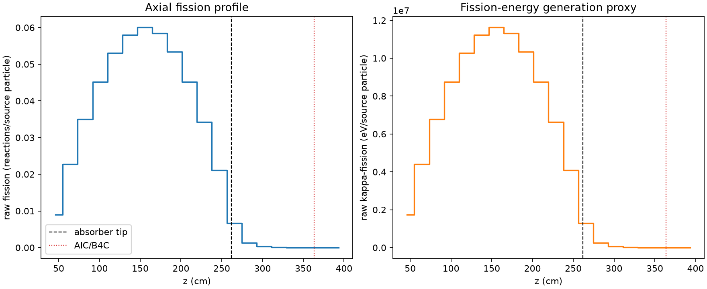
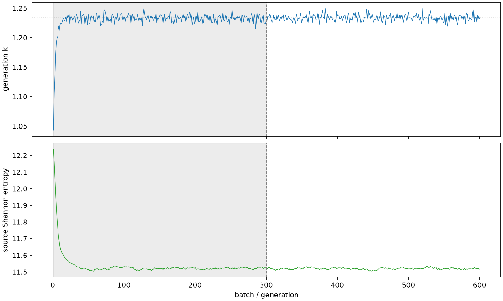

| field | value |
|---|---|
| experiment | V2-STAGE_128_OGRENCI_02-0009 |
| k | 1.233530984166857 |
| MC standard error | 0.0001980576534905315 |
| seconds | 1030.6936477619984 |
| acceptance | not_assessed |
| convergence | review_required |
Completed is output integrity only; physical and statistical review required. Zero tallies do not prove zero production or zero uncertainty.
| diagnostic | value |
|---|---|
| geometric fuel voxels | 5280 |
| zero fission tally voxels | 279 |
| low signal fuel voxels | 1129 |
| low signal fission share | 8.040299568644401e-05 |
| low signal kappa share | 8.043058518470058e-05 |
| important fission share | 0.9501448094138946 |
| previous filter included | 4151 |
| duration estimate s | 1562.5173488400023 |
| actual minus estimate s | -531.823701078004 |
| fission relative MC error | statistics |
|---|---|
| all_geometric_fuel | {"voxels": 5280, "positive_mean_voxels": 5001, "zero_mean_voxels": 279, "undefined_relative_error_voxels": 279, "median": 0.010744145516819745, "p95": 0.7527359539490328, "maximum": 1.0000000000000002} |
| low_signal | {"voxels": 1129, "positive_mean_voxels": 850, "zero_mean_voxels": 279, "undefined_relative_error_voxels": 279, "median": 0.5405518982801245, "p95": 1.0, "maximum": 1.0000000000000002} |
| important_95pct | {"voxels": 2804, "positive_mean_voxels": 2804, "zero_mean_voxels": 0, "undefined_relative_error_voxels": 0, "median": 0.007654370598042153, "p95": 0.011266307057518951, "maximum": 0.014932553642144604} |
| outside_previous_filter | {"voxels": 1129, "positive_mean_voxels": 850, "zero_mean_voxels": 279, "undefined_relative_error_voxels": 279, "median": 0.5405518982801245, "p95": 1.0, "maximum": 1.0000000000000002} |
| kappa_fission relative MC error | statistics |
|---|---|
| all_geometric_fuel | {"voxels": 5280, "positive_mean_voxels": 5001, "zero_mean_voxels": 279, "undefined_relative_error_voxels": 279, "median": 0.01073334392127977, "p95": 0.7520291389338692, "maximum": 1.0000000000000002} |
| low_signal | {"voxels": 1129, "positive_mean_voxels": 850, "zero_mean_voxels": 279, "undefined_relative_error_voxels": 279, "median": 0.5400266338015023, "p95": 1.0, "maximum": 1.0000000000000002} |
| important_95pct | {"voxels": 2804, "positive_mean_voxels": 2804, "zero_mean_voxels": 0, "undefined_relative_error_voxels": 0, "median": 0.007646200886214963, "p95": 0.011253191601087944, "maximum": 0.014915790013825026} |
| outside_previous_filter | {"voxels": 1129, "positive_mean_voxels": 850, "zero_mean_voxels": 279, "undefined_relative_error_voxels": 279, "median": 0.5400266338015023, "p95": 1.0, "maximum": 1.0000000000000002} |
| axial bin | fission share | kappa-fission share |
|---|---|---|
| 1 | 0.01787161647693108 | 0.01787240161600887 |
| 2 | 0.045194671057419526 | 0.04519449720777077 |
| 3 | 0.06942788629053842 | 0.06942733156154056 |
| 4 | 0.08964625629387456 | 0.0896460323815892 |
| 5 | 0.10542929115594635 | 0.10542901745100122 |
| 6 | 0.11504753509129075 | 0.11504720124061038 |
| 7 | 0.1191364314844235 | 0.11913570709176644 |
| 8 | 0.11601538134935657 | 0.1160146725333318 |
| 9 | 0.10602706373930328 | 0.10602661257231172 |
| 10 | 0.08971046813332172 | 0.08971003419627545 |
| 11 | 0.06787274881072262 | 0.06787262615577622 |
| 12 | 0.0419901889682151 | 0.041990094240256653 |
| 13 | 0.013293014642336932 | 0.013295114955494333 |
| 14 | 0.002570878193353822 | 0.0025717986154961373 |
| 15 | 0.0005880332862571899 | 0.0005882552959715518 |
| 16 | 0.00013564146011634562 | 0.00013569453496688392 |
| 17 | 3.3746695160701245e-05 | 3.3758972405633186e-05 |
| 18 | 7.570041122348325e-06 | 7.572570054959935e-06 |
| 19 | 1.4756296626609385e-06 | 1.4753716719370649e-06 |
| 20 | 1.0120064666353796e-07 | 1.0143569953475913e-07 |
Histories include the inactive-to-active transition at batch 300. kappa-fission approximates fission energy production, not total heat deposition.

